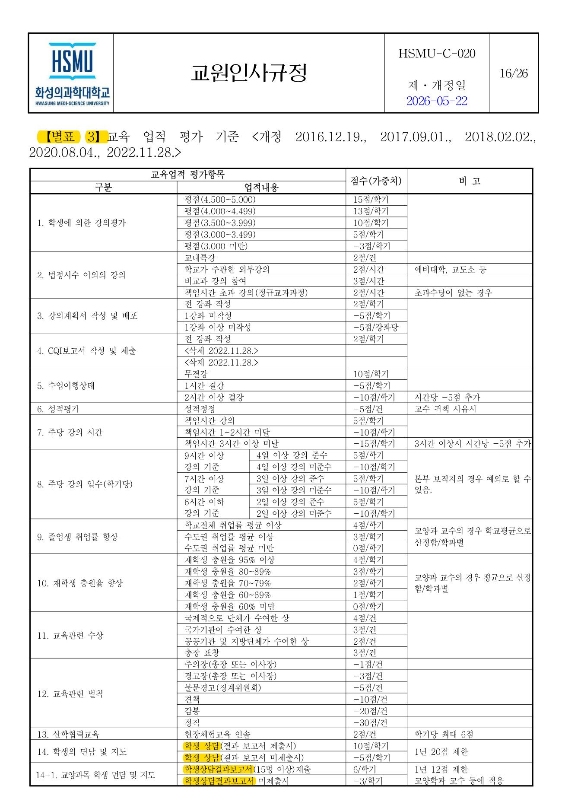
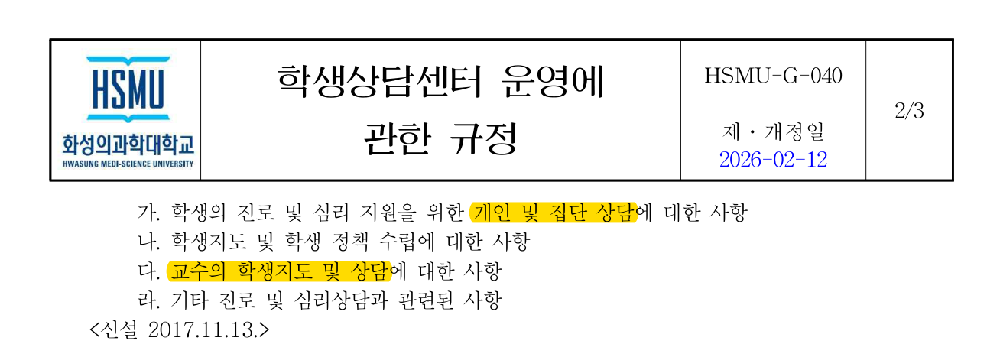

조교수 임용기간 4년을 기준으로 연구실적은 연평균 100%, 교육·봉사업적은 각각 연평균 70점 이상을 충족해야 합니다.
4년 × 100%. 등재/등재후보지급 이상 논문 1편 이상 필요.
현직급 재임용기간 내 연평균 70점 이상.
각 판단 항목은 원문 PDF와 캡쳐 이미지를 함께 제공합니다. PDF는 원자료 전체 확인용, PNG는 해당 구문 빠른 확인용입니다.
교육업적 별표 3에 학생 상담 결과보고서 제출 항목이 포함되어 있습니다. 규정 자체는 별도 서식인지 인트라넷 상담카드인지 명시하지 않습니다.

